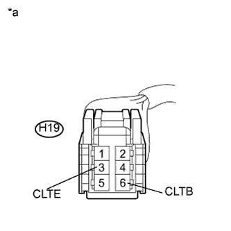
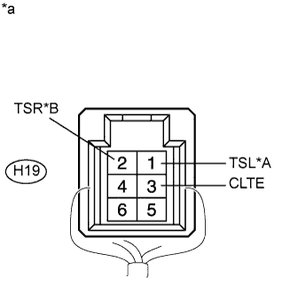

DTC B14A3 Короткое замыкание в цепи датчика солнечной радиации со стороны переднего пассажира |
| Код DTC | Условие обнаружения DTC | Неисправный участок |
| B14A3 | Обрыв или короткое замыкание в цепи датчика солнечной радиации со стороны пассажира. |
|
| 1.СНИМИТЕ ПОКАЗАНИЯ ПОРТАТИВНОГО ДИАГНОСТИЧЕСКОГО ПРИБОРА (ДАТЧИКА СОЛНЕЧНОЙ РАДИАЦИИ) |
В режиме Data List проверьте работоспособность датчика автоматического управления освещением (датчика солнечной радиации) (Нажмите здесь).
| Информация на дисплее прибора | Измеряемая величина / диапазон измерения | Нормальное состояние | Замечание по диагностике |
| Solar Sensor (P side) | Датчик автоматического управления освещением (датчик солнечной радиации) / Мин.: 0, макс.: 255 | Напряжение датчика солнечной радиации со стороны пассажира возрастает по мере увеличения освещенности | Обрыв в цепи: 0. Короткое замыкание в цепи: 255. |
| Результат | Следующий шаг |
| ОК (при поиске неисправностей по таблице признаков неисправностей) | А |
| ОК (при поиске неисправностей по DTC) | B |
| NG | C |
|
| ||||
|
| ||||
| А | ||
| ||
| 2.ПРОВЕРЬТЕ ЖГУТ ПРОВОДОВ И РАЗЪЕМ (ЦЕПЬ ПИТАНИЯ) |
|  |
Отсоедините разъем H19 датчика.
Измерьте напряжение в соответствии со значениями, приведенными в таблице.
| Контакты для подключения диагностического прибора | Положение переключателя | Заданные условия |
| H19-6 (CLTB) - H19-3 (CLTE) | Зажигание выключено | Менее 1 В |
| H19-6 (CLTB) - H19-3 (CLTE) | Зажигание включено | 11 - 14 В |
| *a | Вид спереди разъема со стороны жгута проводов: (к датчику автоматического управления освещением (датчику солнечной радиации)) |
|
| ||||
| OK | |
| 3.ПРОВЕРЬТЕ ЖГУТ И РАЗЪЕМ (ДАТЧИК СОЛНЕЧНОЙ РАДИАЦИИ – БЛОК УПРАВЛЕНИЯ СИСТЕМОЙ КОНДИЦИОНИРОВАНИЯ) |
Отсоедините разъем H19 датчика.
Отсоедините разъем G25 блока управления.
Измерьте сопротивление в соответствии со значениями, приведенными в таблице ниже.
| Контакты для подключения диагностического прибора | Режим | Заданные условия |
| H19-2 (TSR) - G25-32 (TSP) | Всегда | Менее 1 Ом |
| H19-2 (TSR) - масса | Всегда | 10 кОм или более |
| Контакты для подключения диагностического прибора | Режим | Заданные условия |
| H19-1 (TSL) - G25-32 (TSP) | Всегда | Менее 1 Ом |
| H19-1 (TSL) - масса | Всегда | 10 кОм или более |
|
| ||||
| OK | |
| 4.ПРОВЕРЬТЕ ДАТЧИК АВТОМАТИЧЕСКОГО УПРАВЛЕНИЯ ОСВЕЩЕНИЕМ (ДАТЧИК СОЛНЕЧНОЙ РАДИАЦИИ) |
|  |
Снимите датчик автоматического управления освещением (датчик солнечной радиации), не отсоединяя его разъем (Нажмите здесь).
Измерьте напряжение в соответствии со значениями, приведенными в таблице.
| Контакты для подключения диагностического прибора | Положение переключателя | Заданные условия |
| H19-2 (TSR) - H19-3 (CLTE) | Зажигание включено Датчик освещается электрическим светом | 0,8 - 4,3 В |
| H19-2 (TSR) - H19-3 (CLTE) | Зажигание включено Датчик закрыт тканью | Менее 0,8 В |
| Контакты для подключения диагностического прибора | Положение переключателя | Заданные условия |
| H19-1 (TSL) - H19-3 (CLTE) | Зажигание включено Датчик освещается электрическим светом | 0,8 - 4,3 В |
| H19-1 (TSL) - H19-3 (CLTE) | Зажигание включено Датчик закрыт тканью | Менее 0,8 В |
| *A | Для моделей с правосторонним рулевым управлением |
| *B | Для моделей с левосторонним рулевым управлением |
| *a | Устройство с подсоединенным жгутом проводов (датчик автоматического управления освещением (датчик солнечной радиации)) |
|
| ||||
| OK | ||
| ||
| 5.ПРОВЕРЬТЕ ЖГУТ ПРОВОДОВ И РАЗЪЕМ (ГЛАВНЫЙ ЭБУ КУЗОВА – ДАТЧИК СОЛНЕЧНОЙ РАДИАЦИИ) |
Отсоедините разъем G64 ЭБУ.
Отсоедините разъем H19 датчика.
Измерьте сопротивление в соответствии со значениями, приведенными в таблице ниже.
| Контакты для подключения диагностического прибора | Условие | Заданные условия |
| G64-22 (CLTE) - H19-3 (CLTE) | Всегда | Менее 1 Ом |
| G64-20 (CLTB) - H19-6 (CLTB) | Всегда | Менее 1 Ом |
| G64-22 (CLTE) - масса | Всегда | 10 кОм или более |
| G64-20 (CLTB) - масса | Всегда | 10 кОм или более |
|
| ||||
| OK | ||
| ||